Desarrollo: Parte 1 · Comprendo el documento (20 min, 4 puntos) → Parte 2 · Me expreso (30 min, 16 puntos), 80 a 100 palabras (50 a 70 en la versión ★). Baremo del socle: 5 criterios × 4 puntos.
Hoja de examen (3 páginas)
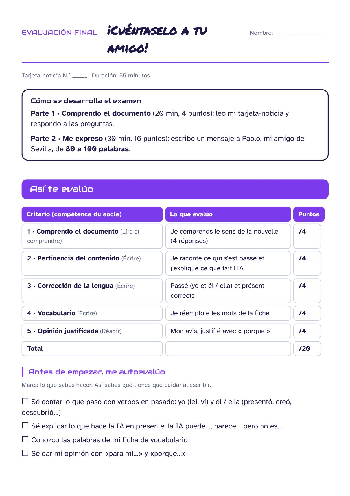


Hoja de examen · versión ★ (PAP)
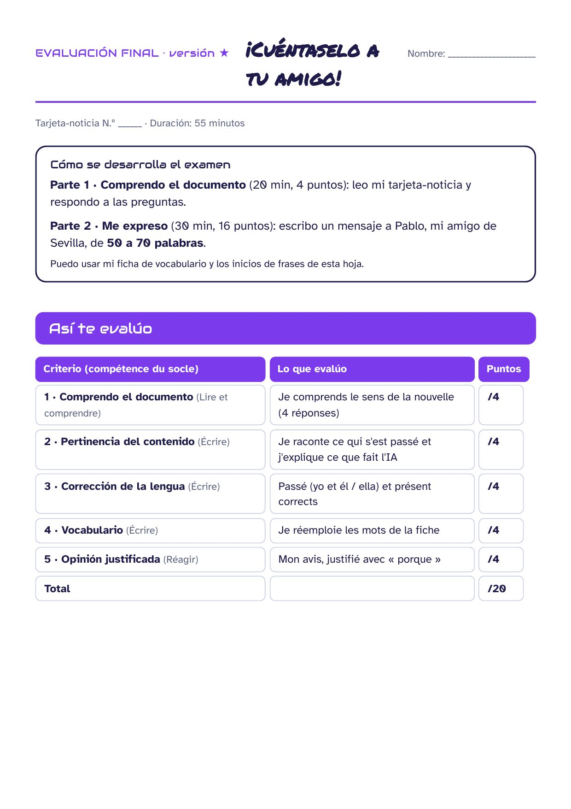
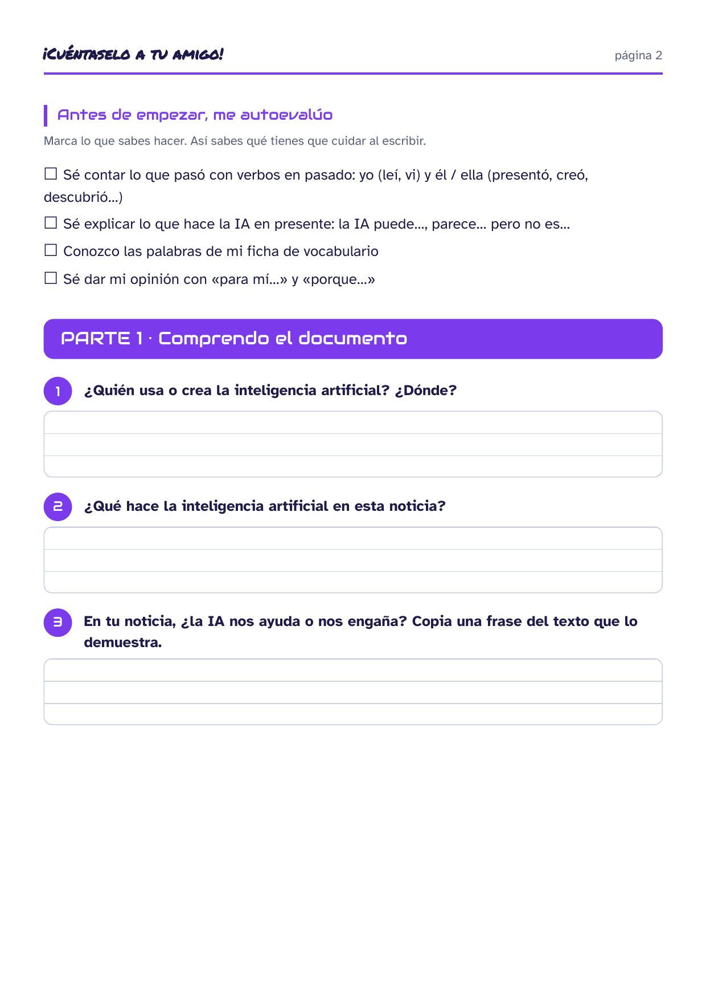

Las 35 tarjetas-noticia (9 planchas, 4 tarjetas por página)
Imprimir, plastificar y recortar por la línea de puntos. Fotos: Wikimedia Commons (licencias libres, crédito en cada imagen) · pictogramas: Tabler Icons (MIT).
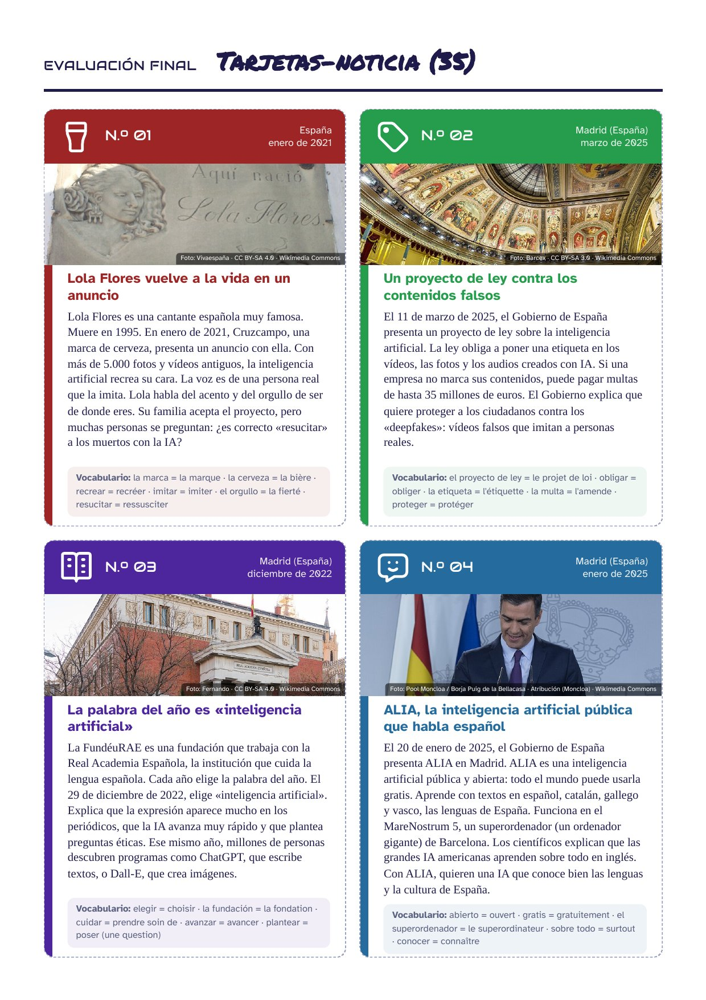
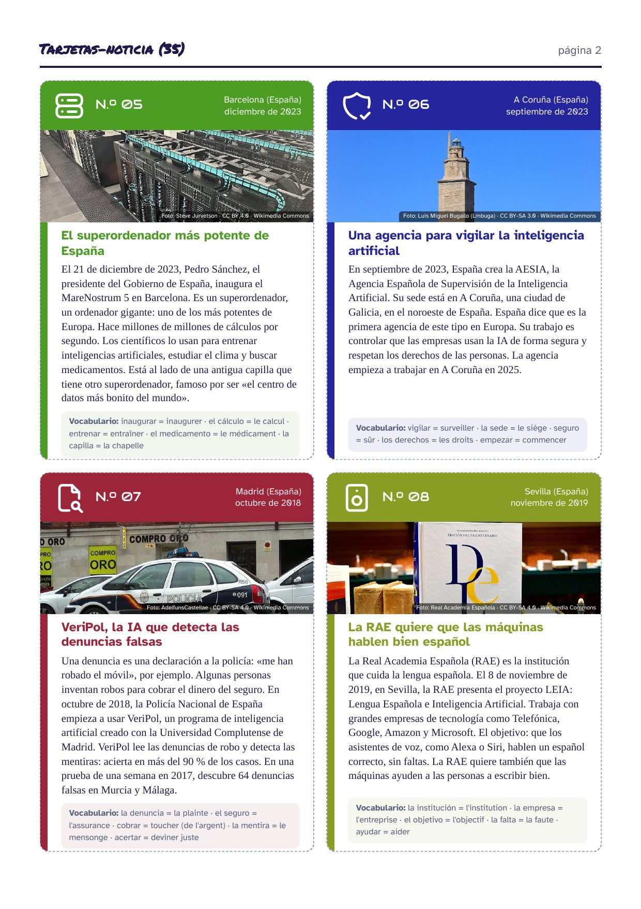
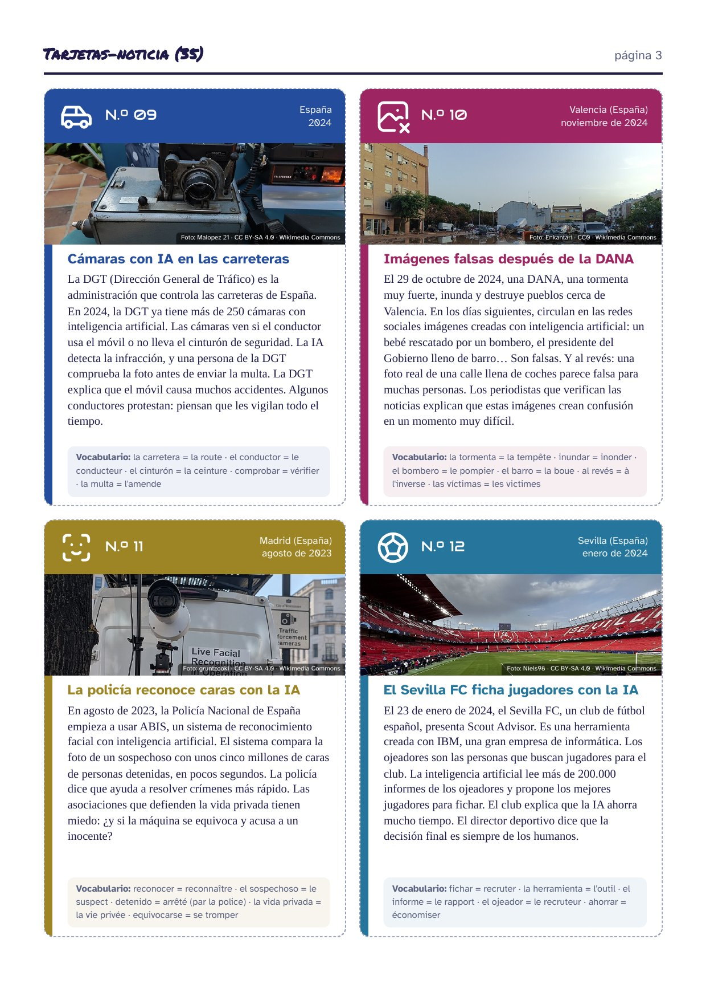
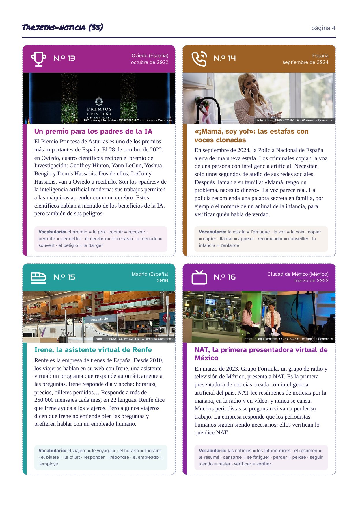
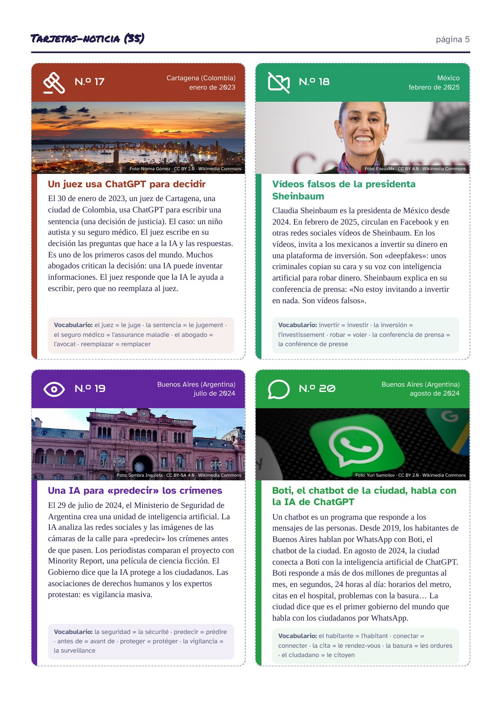
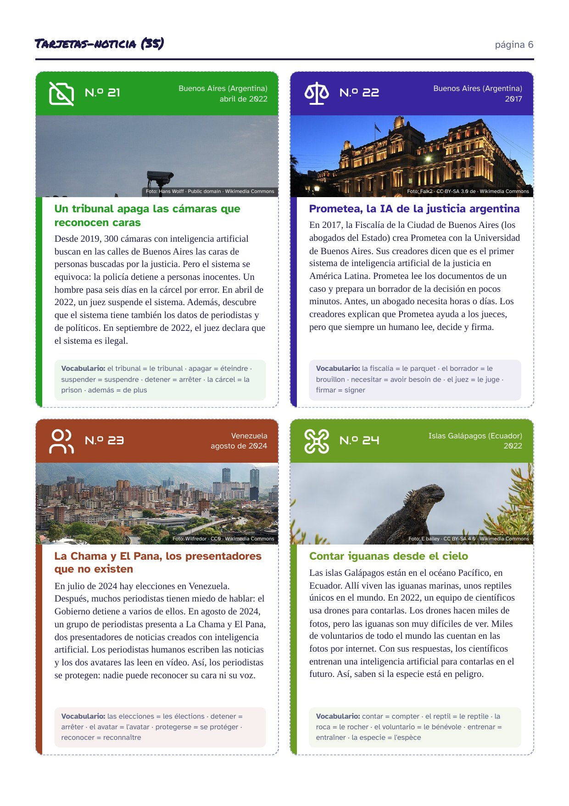
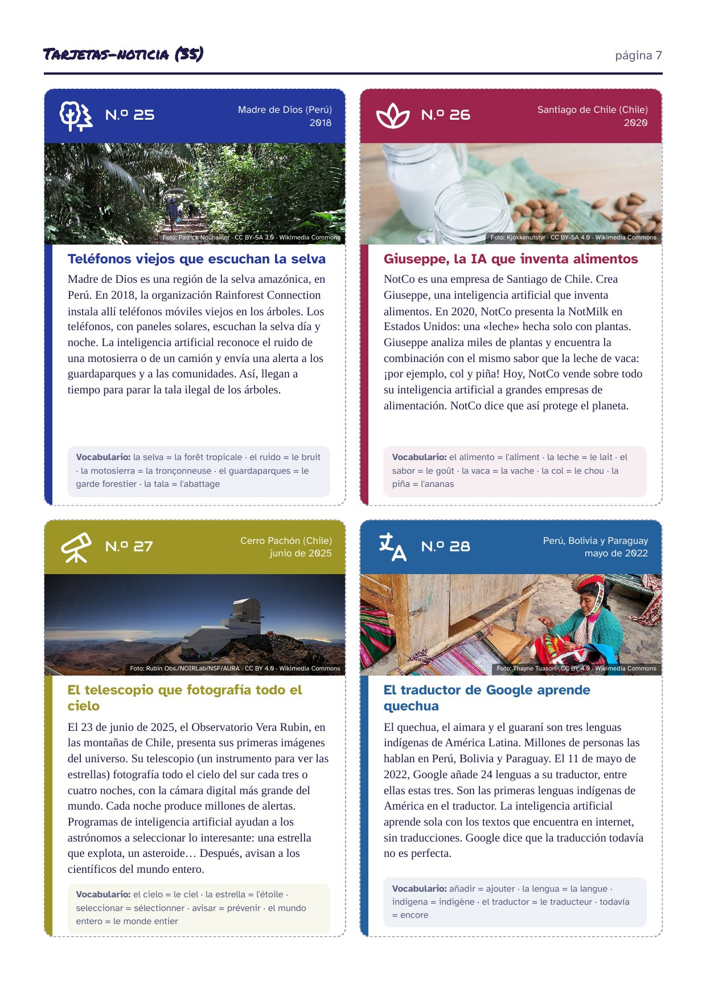
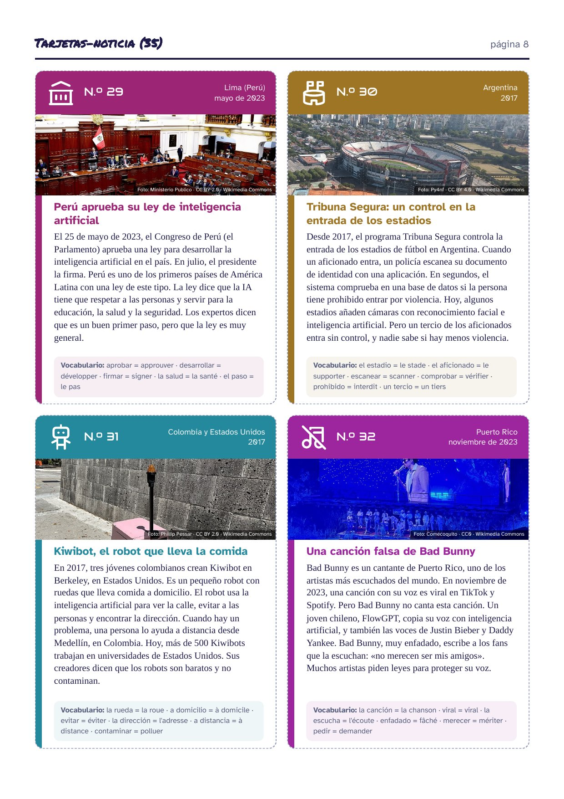
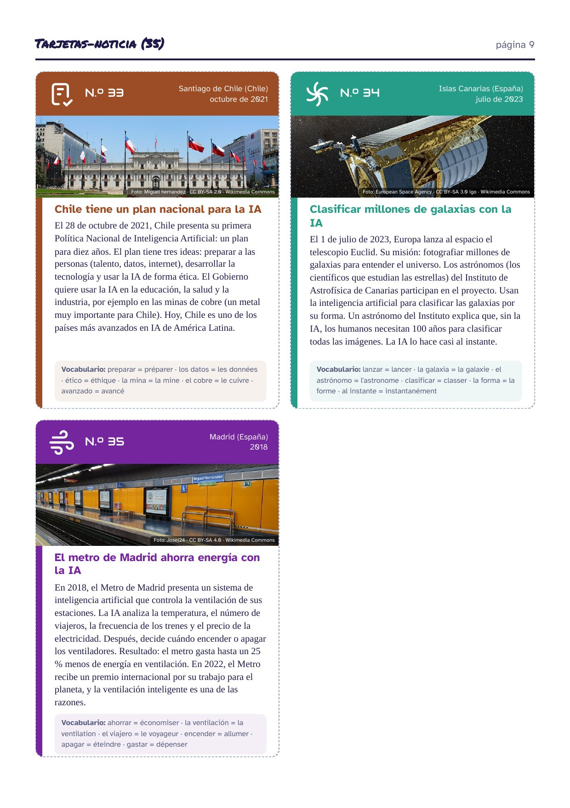
Para el profesor · corrigé de la parte 1 y verbos esperados (35 tarjetas)
Solo se enseñan las formas yo y él / ella: cuando el actor es plural, se acepta una forma en singular («el equipo creó») o la forma en -aron / -ieron si el alumno la conoce. La columna « Tendance » es indicativa: en los temas « débat », las dos respuestas se aceptan si están justificadas.
| N.º | ¿Quién? | ¿Qué hace la IA? | ¿Dónde? · ¿Cuándo? | Verbes attendus (él / ella) | Tendance |
|---|---|---|---|---|---|
| 01 | la marca Cruzcampo | recrea la cara de Lola Flores con IA | España · enero de 2021 | presentó · recreó · aceptó | débat |
| 02 | el Gobierno de España | presenta un proyecto de ley para marcar los contenidos creados con IA | Madrid (España) · marzo de 2025 | presentó · explicó · obligó | ayuda |
| 03 | la FundéuRAE | elige «inteligencia artificial» como palabra del año | Madrid (España) · diciembre de 2022 | eligió · explicó · descubrieron (ellos) / descubrió | débat |
| 04 | el Gobierno de España | presenta ALIA, una IA pública que habla las lenguas de España | Madrid (España) · enero de 2025 | presentó · explicó · aprendió | ayuda |
| 05 | Pedro Sánchez / los científicos de Barcelona | inauguran el superordenador MareNostrum 5 | Barcelona (España) · diciembre de 2023 | inauguró · usó · hizo | ayuda |
| 06 | España / la AESIA | crea una agencia para controlar la IA, en A Coruña | A Coruña (España) · septiembre de 2023 | creó · dijo · empezó | ayuda |
| 07 | la Policía Nacional | usa VeriPol para detectar denuncias falsas | Madrid (España) · octubre de 2018 | empezó · descubrió · detectó | ayuda |
| 08 | la Real Academia Española | presenta el proyecto LEIA con empresas de tecnología | Sevilla (España) · noviembre de 2019 | presentó · trabajó · quiso | débat |
| 09 | la DGT | usa cámaras con IA que detectan el móvil al volante | España · 2024 | tuvo · detectó · explicó | débat |
| 10 | unos usuarios anónimos / los periodistas de verificación | crean y difunden imágenes falsas de la DANA | Valencia (España) · noviembre de 2024 | circularon · destruyó · explicaron | engaña |
| 11 | la Policía Nacional | usa ABIS, un sistema de reconocimiento facial | Madrid (España) · agosto de 2023 | empezó · comparó · dijo | débat |
| 12 | el Sevilla FC | usa la IA para elegir jugadores | Sevilla (España) · enero de 2024 | presentó · creó · explicó | débat |
| 13 | cuatro científicos (Hinton, LeCun, Bengio, Hassabis) | reciben el Premio Princesa de Asturias en Oviedo | Oviedo (España) · octubre de 2022 | recibieron (ellos) / recibió · fue · permitió | débat |
| 14 | la Policía Nacional / unos criminales | copian voces con IA para estafar a las familias | España · septiembre de 2024 | alertó · copiaron · recomendó | engaña |
| 15 | Renfe | crea a Irene, una asistente virtual para los viajeros | Madrid (España) · 2010 | creó · respondió · ayudó | débat |
| 16 | Grupo Fórmula | presenta a NAT, una presentadora creada con IA | Ciudad de México (México) · marzo de 2023 | presentó · leyó · respondió | débat |
| 17 | un juez de Cartagena | usa ChatGPT para escribir una sentencia | Cartagena (Colombia) · enero de 2023 | usó · escribió · respondió | débat |
| 18 | unos criminales | crean vídeos falsos de la presidenta Sheinbaum para robar dinero | México · febrero de 2025 | copiaron · circularon · explicó | engaña |
| 19 | el Ministerio de Seguridad de Argentina | crea una unidad de IA para predecir crímenes | Buenos Aires (Argentina) · julio de 2024 | creó · analizó · protestaron (ellos) / protestó | débat |
| 20 | la ciudad de Buenos Aires | conecta su chatbot Boti con la IA de ChatGPT | Buenos Aires (Argentina) · agosto de 2024 | conectó · respondió · dijo | ayuda |
| 21 | un juez de Buenos Aires | suspende el reconocimiento facial de la ciudad | Buenos Aires (Argentina) · abril de 2022 | suspendió · detuvo · descubrió | engaña |
| 22 | la Fiscalía de Buenos Aires | crea Prometea, una IA que ayuda a la justicia | Buenos Aires (Argentina) · 2017 | creó · leyó · explicaron (ellos) / explicó | ayuda |
| 23 | un grupo de periodistas de Venezuela | crea dos presentadores con IA para informar sin peligro | Venezuela · agosto de 2024 | presentó · escribieron (ellos) / escribió · leyeron / leyó | ayuda |
| 24 | un equipo de científicos | cuenta las iguanas de Galápagos con drones, voluntarios e IA | Islas Galápagos (Ecuador) · 2022 | usó · hizo · entrenó | ayuda |
| 25 | la organización Rainforest Connection | instala teléfonos con IA para detectar la tala ilegal | Madre de Dios (Perú) · 2018 | instaló · reconoció · envió | ayuda |
| 26 | la empresa chilena NotCo | crea una IA que inventa alimentos con plantas | Santiago de Chile (Chile) · 2020 | creó · presentó · encontró | ayuda |
| 27 | el Observatorio Vera Rubin | presenta sus primeras imágenes; la IA ayuda a seleccionar las alertas | Cerro Pachón (Chile) · junio de 2025 | presentó · fotografió · avisó | ayuda |
| 28 | añade el quechua, el aimara y el guaraní a su traductor | Perú, Bolivia y Paraguay · mayo de 2022 | añadió · aprendió · dijo | ayuda | |
| 29 | el Congreso de Perú | aprueba una ley de inteligencia artificial | Lima (Perú) · mayo de 2023 | aprobó · firmó · dijo | débat |
| 30 | el Gobierno de Argentina (Tribuna Segura) | controla la entrada de los estadios con una base de datos y, hoy, con IA | Argentina · 2017 | controló · comprobó · añadieron (ellos) / añadió | débat |
| 31 | tres jóvenes colombianos | crean Kiwibot, un robot repartidor con IA | Colombia y Estados Unidos · 2017 | crearon (ellos) / creó · usó · ayudó | débat |
| 32 | un joven chileno (FlowGPT) | copia la voz de Bad Bunny con IA | Puerto Rico · noviembre de 2023 | copió · escribió · pidieron (ellos) / pidió | engaña |
| 33 | Chile / el Gobierno de Chile | presenta una política nacional de IA | Santiago de Chile (Chile) · octubre de 2021 | presentó · quiso · desarrolló | ayuda |
| 34 | los astrónomos del Instituto de Astrofísica de Canarias | usan la IA para clasificar las galaxias del telescopio Euclid | Islas Canarias (España) · julio de 2023 | lanzó · participaron (ellos) / participó · explicó | ayuda |
| 35 | el Metro de Madrid | usa la IA para ahorrar energía en la ventilación | Madrid (España) · 2018 | presentó · analizó · recibió | ayuda |